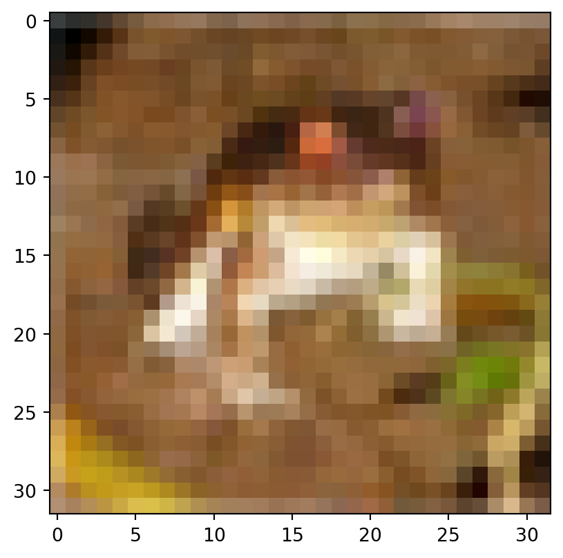
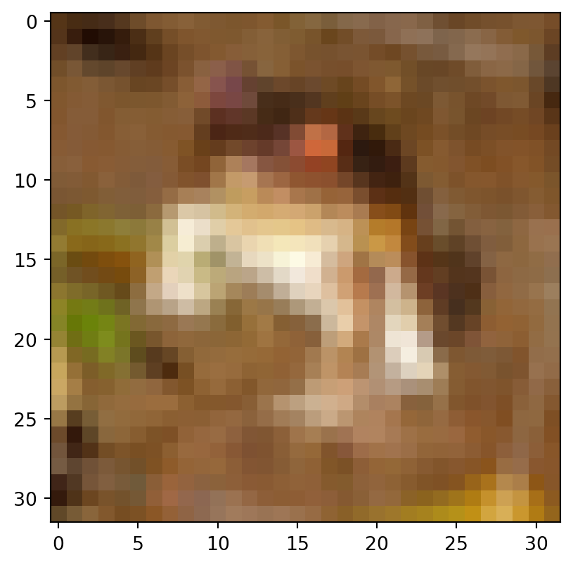

from tensorflow import keras
import matplotlib.pyplot as pltData augmentation
Nesse exemplo vamos mostrar o que é e para que serve técnicas de data augmentation. Vamos mostrar no contexto de imagens, mas essa idéia pode valer para diversas outras aplicações.
Vamos usar o banco de dados do CIFAR10:
(x_train, y_train), (x_test, y_test) = keras.datasets.cifar10.load_data()Data augmentation consiste em usar heurísticas para modificar os dados de uma forma que poderia acontecer na vida real. Em imagens é muito comum mudar um pouco o brilho, fazer um pouquinho de zoom ou rotacionar um pouco a imagem.
data_augmentation = keras.Sequential([
keras.layers.RandomFlip("horizontal"),
keras.layers.RandomRotation(0.2)
])2022-05-03 16:40:40.167394: I tensorflow/core/platform/cpu_feature_guard.cc:151] This TensorFlow binary is optimized with oneAPI Deep Neural Network Library (oneDNN) to use the following CPU instructions in performance-critical operations: AVX2 FMA
To enable them in other operations, rebuild TensorFlow with the appropriate compiler flags.Vamos ver o que acontece com as imagens depois dessa transformação:
plt.imshow(x_train[0])
plt.show()
plt.imshow(data_augmentation(x_train[0:1]).numpy()[0].astype("uint8"))
plt.show()

Fazer essas transformações pode melhorar bastante o acerto do modelo além de ajusar na generalização. É como se estivéssemos fornecendo um banco de dados bem maior do que o que possuimos.
Agora podemos definir um modelo que usa essas transformações, ajustar e treinar.
class Modelo(keras.Model):
def __init__(self):
super(Modelo, self).__init__()
self.data_augmentation = keras.Sequential([
keras.layers.RandomFlip("horizontal"),
keras.layers.RandomRotation(0.2)
])
self.encoder = keras.Sequential([
keras.layers.Conv2D(filters=64, kernel_size=(3,3), activation="relu", padding="same"),
keras.layers.MaxPool2D(pool_size=(2,2)),
keras.layers.Conv2D(filters=64, kernel_size=(3,3), activation="relu", padding="same"),
keras.layers.MaxPool2D(pool_size=(2,2)),
keras.layers.Conv2D(filters=64, kernel_size=(3,3), activation="relu", padding="same"),
keras.layers.MaxPool2D(pool_size=(2,2)),
keras.layers.Flatten()
])
self.classifier = keras.Sequential([
keras.layers.Dense(128, activation="relu"),
keras.layers.Dense(10, activation="softmax")
])
def call(self, x):
out = self.data_augmentation(x)
out = self.encoder(out)
return self.classifier(out)Para compilar usamos:
model = Modelo()
model.compile(
loss = keras.losses.SparseCategoricalCrossentropy(from_logits=False),
optimizer = "adam",
metrics = ["accuracy"]
)E ajustamos com:
model.fit(x_train, y_train, validation_data=(x_test, y_test), epochs=5, verbose=2)Epoch 1/51563/1563 - 93s - loss: 1.9322 - accuracy: 0.3553 - val_loss: 1.6136 - val_accuracy: 0.4348 - 93s/epoch - 60ms/stepEpoch 2/51563/1563 - 90s - loss: 1.5953 - accuracy: 0.4297 - val_loss: 1.4945 - val_accuracy: 0.4607 - 90s/epoch - 58ms/stepEpoch 3/51563/1563 - 137s - loss: 1.5013 - accuracy: 0.4632 - val_loss: 1.3715 - val_accuracy: 0.5133 - 137s/epoch - 88ms/stepEpoch 4/51563/1563 - 122s - loss: 1.4333 - accuracy: 0.4908 - val_loss: 1.3586 - val_accuracy: 0.5198 - 122s/epoch - 78ms/stepEpoch 5/51563/1563 - 101s - loss: 1.3687 - accuracy: 0.5101 - val_loss: 1.3509 - val_accuracy: 0.5299 - 101s/epoch - 64ms/step<keras.callbacks.History at 0x7f8b4ed34eb0>